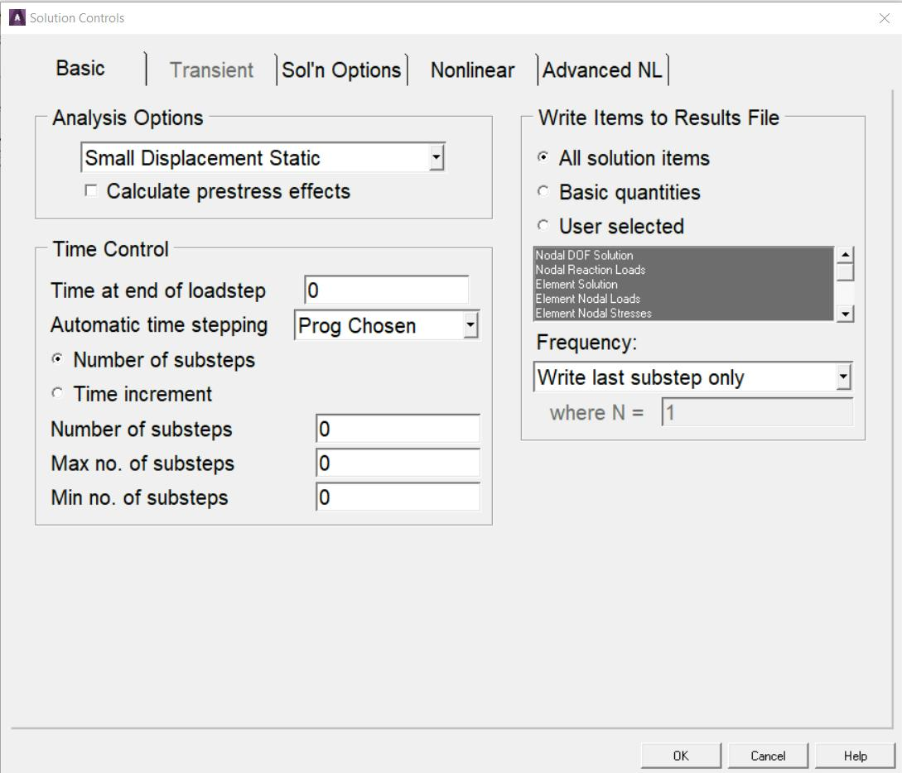

1 ANSYS BASICS
ANSYS is a sophisticated and comprehensive finite element program. It
has capabilities in many different physics fields such as static structural,
nonlinear, thermal, implicit and explicit dynamics, fluid flow, electromagnetics,
and electric field analysis (Fig. 1.1). Obviously because ANSYS is a huge
program with so many capabilities it is impossible to cover everything in this
small book. This book will give an introduction as to how the ANSYS program
works and how these basic skills will be applicable to any type of analysis
within ANSYS. The most important concepts in using ANSYS will be addressed
here in a compressed format. The key to becoming productive in any
computer aided engineering program is to start to think like the program
thinks, to get the big picture of how it works in general.
Fig. 1.1 Some applications of ANSYS
ANSYS is an integrated program with all operations performed under
one Graphic User Interface, GUI. Creating the model, running it, and
postprocessing the results are all done without leaving the ANSYS
environment.
There are many different ways of working within ANSYS. Like every
software, ANSYS is driven by commands. It gives easy access to these
commands. These commands are simple to use; just a keyword followed by
several arguments.
New ANSYS users generally don’t use scripting to start with and just
want to find out how to do what they want within the GUI environment.
That’s where this book starts as well. Each key concept is explained as briefly
as possible.
1.1 Finite Element Method
It is very helpful to an engineer using ANSYS to have at least some
idea of how the finite element method (FEM) works. What happens internally
when ANSYS is told to Solve? Many terms associated with finite element
modeling in general heard over and over again are based on the common
numerical algorithms. After all, the finite element method is purely a
mathematical technique.
The FEM was developed more by engineers during the 1950s and
1960s using physical insight than by mathematicians using abstract methods.
The underlying theory is over 100 years old. It was the basis for pen-and-
paper calculations in the evaluation of suspension bridges and steam boilers.
It was first applied to problems of stress analysis. In all applications the
analyst seeks to calculate a field quantity: in stress analysis it is the
displacement field or the stress field; in thermal analysis it is the temperature
field or the heat flux; in fluid flow it is the stream function or the velocity
potential function; and so on. Results of greatest interest are usually peak
values of either the field quantity or its gradients. The FE method is a way of
getting a numerical solution to a specific problem. An FE analysis does not
produce a formula as a solution, nor does it solve a class of problems. Also,
the solution is approximate unless the problem is so simple that a convenient
exact formula is already available.
When there is a structure like a simply supported beam, it’s easy
enough to grab an engineering handbook or textbook and look up the
equations needed to calculate the bending moments and displacements.
However if there is a structure that is even just a little more complicated, like
a stepladder (Fig. 1.2) for example, one will not be able to go to the
engineering handbook and look up the stepladder equation. Sure, it’s possible
to derive some governing equation(s) for the stepladder but this might be a
lot of trouble. For even more complex structures it quickly becomes
impossible to do so.

Fig. 1.2 A Stepladder and its FE Model
This is where the finite element technique comes in. In this method an
arbitrarily complex structure that cannot be described with an equation is
broken down into small pieces, each of which is simple enough on it’s own
that it can be described with an equation. While the actual structure
theoretically contains an infinite number of small pieces it could be broken
down into, this method breaks it down into a finite number of pieces of a
specific size that analyst can choose. The smaller the pieces, the closer the
approximation is to reality. Then the response of the entire structure is
calculated by essentially summing up the response of each little piece. These
small pieces are called elements, and each element is connected to its
neighbor by nodes at each of its vertices.
More and more these days solid part is meshed to create nodes and
elements. It’s important to realize that the solid CAD part is not the finite
element model; it is just a vehicle used to tell ANSYS where analyst wants the
nodes and elements to go. The finite element method works only with the
nodes and elements.
The FE method involves cutting a structure into several elements
(pieces of the structure), describing the behavior of each element in a simple
way, and then connecting elements together again. This process results in a
set of simultaneous algebraic equations. In stress analysis these equations
are equilibrium equations of the connection points. There may be several
hundred or several thousand such equations, which means that computer
implementation is mandatory. A more sophisticated description of the FE
method regards it as piecewise polynomial interpolation. That is, over an
element, a field quantity such as displacement is interpolated from values of
the field quantity at the connection points. By connecting elements together,
the field quantity becomes interpolated over the entire structure in piecewise
fashion, by as many polynomial expressions as there are elements. The best
values of the field quantity at the connection points are those that minimize
some function such as total energy. The minimization process generates a set
of simultaneous algebraic equations for values of the field quantity at the
connection points.
The power of the FE method is its versatility. The object analyzed may
have arbitrary shape, arbitrary supports and arbitrary loads. Such generality
does not exist in classical analytical methods. For example, temperature-
induced stresses are difficult to analyze with classical methods, even when
the structure geometry and the temperature field are both simple. The FE
method treats thermal stresses as easily as stresses induced by mechanical
load, and the temperature distribution itself can be calculated by FE.
The theory of FE includes matrix manipulations, numerical integration,
equation solving, and other procedures carried out automatically by
commercial software. The analyst may see only hints of these procedures as
the software processes data. The analyst deals mainly with preprocessing
(describing loads, supports, materials, and generating the FE mesh) and
postprocessing (sorting output, listing and plotting of results).
There are various levels of engineering abstraction built into different
kinds of elements. A solid element is fully defined by its geometry in 3D space
(think of it as a small block cut out of the part), while shells (also called
plates) are idealized by a surface and so need a thickness to be assigned for
them to fully understand what they are. A beam element is a further
abstraction. A simple line between two points defines it geometrically, and so
analyst has to supply its area, moment of inertia, torsional stiffness, etc.
All of the basic calculations in the finite element method are performed
at the nodes. What happens inside an element between the nodes is
controlled by the element shape function. This is an assumed distribution of
the primary variable and can be linear, quadratic, cubic, etc. For structural
analysis the primary variable is the displacement and is also called the degree
of freedom (DOF). A general three dimensional structural model has six
degrees of freedom at each node, translations in the X, Y and Z directions,
and rotations about those three axes. For a thermal analysis the degrees of
freedom are the temperatures at each node.
The fundamental equation of the finite element method is [K]{ u} = {
F}, where [K] is the stiffness matrix, {u} is the displacement vector, and {F}
is the applied load vector. This is analogous to a simple spring (Fig. 1.3) that
obeys Hooke’s Law (stress = Young’s modulus x strain), and is the essence of
“small deflection theory”, or linear analysis. Small deflection theory means
that the displacement calculated for the applied load can be extrapolated to
any value of load, and that the stiffness of the structure does not change for
any value of applied load. Strictly speaking, this assumption is never exactly
true, but for a very large class of analyses it has traditionally been considered
good enough.
Fig. 1.3
1.2 Introduction to ANSYS
Engineers can perform the following tasks using finite element analysis
software ANSYS:
- Transferring CAD models of structures, products, components, or
systems or building computer models
- Applying design performance conditions or working loads
- Studying responses, such as stress levels or temperature distributions
- Optimizing a design
- Do prototype testing in situations where it otherwise would be
impossible.
5
The ANSYS offers a Graphic User Interface (GUI) that permits easy,
interactive access to functions, commands and documentation. An intuitive
menu system helps the analyst steer through the ANSYS program. S/he can
input data using a mouse, a keyboard, or both.
This chapter provides basic guidelines for using the ANSYS program:
starting and stopping the analysis, using the online help system, using and
customizing the GUI, etc.
1.3 Mechanical APDL Environment
There are two basic levels in ANSYS - Begin level and Processor level.
The Begin level acts as a doorway into and out of the program. It is also used
for performing operations such as changing the jobname, clearing the
database, and copying binary files. When the analyst first enters the program,
s/he is at the Begin level.
At the Processor level, many processors are available. Each processor
is a set of functions that performs a specific analysis task. The model is built
in the general preprocessor (PREP7). Loads are applied and the solution is
obtained in the solution processor (SOLUTION). The results of a solution are
assessed in the general postprocessor (POST1). An additional postprocessor,
POST26, permits to evaluate solution results at specific points in the model as
a function of time.
1.3.1 Entering a Processor
Select a processor to enter it from the Main Menu of the GUI. Choose
Main Menu> Preprocessor to enter into PREP7.
1.3.2 Exiting from a Processor or from the Program
Pick Main Menu> Finish to return to the Begin level from a processor.
Without returning to the Begin level, the user can move from one processor
to another. Simply pick the processor necessary to do so.
Pick Utility Menu> File> Exit to leave ANSYS. By default, ANSYS
saves the model and loads automatically and writes them to the database
file, Jobname.DB. If a backup of the current database file already exists,
ANSYS writes it to Jobname.DBB. Other portions of the database can be
saved using options in the dialog box. The user can as well quit without
saving.
In order to input a new file, select Utility Menu> File> Clear & Start
New to clear the current file from memory, then select a file to input. In order
to return to processing the original file, select Utility Menu> File> Read
Input from..., select the name of the file to resume from and select
the OKbutton.
The processing of an input file can be stopped as it is being input. Most
files will display the Process Status window at the top of the screen. Use
the STOP button on the Process Status window to terminate the input of a
file. Stopping file input is useful when a binary file is input unintentionally.
1.3.3 The Database
ANSYS stores all input data and results data in one large database in
an structured manner. The main advantage of the database is any specific
data item can quickly and easily be listed, displayed, modified, or deleted.
No matter which processor the analyst is in, s/he works with the same
database. This gives basic access to the model and loads portions of the
database from anywhere in the program. "Basic access" refers the ability to
select, list, or display an item.
1.3.3.1 Defining or Deleting Database Items
The analyst must be in the right processor to define or delete items
from the database. Nodes, elements, and other geometry can be defined
only in PREP7, the general preprocessor. Loads can be specified and applied
in either the PREP7 or the SOLUTION processor. However, geometry items
can be selected, listed, or displayed from anywhere in ANSYS.
1.3.3.2 Saving the Database
The analyst should frequently save copies of database to a file as it
contains all the input data. Pick Utility Menu> File> Save as Jobname.DB to
do this. This choice writes the database to the file Jobname.DB. SAVE
command has the following options:
- the model data only
- the model and solution data
- the model, solution and preprocessing data.
Pick Utility Menu> File> Save as to specify a different file name. Any
save operation first writes a backup of the present database file
to Jobname.DBB. If a Jobname.DBB file already exists, the new backup file
overwrites it.
1.3.3.3 Restoring Database Contents
Pick Utility Menu> File> Resume Jobname.DB to restore data from
the database file. This reads the file Jobname.DB. Pick Utility Menu> File>
Resume from to specify a different file name.
The database can be saved or resumed from anywhere in ANSYS,
including the Begin level. A resume operation replaces the data currently in
memory with the data in the named database file. Using the save and resume
operations together is helpful when "testing" a function or command.
1.3.3.4 Session Editor
During an analysis, it may be necessary to modify or delete commands
entered since the last SAVE or RESUME. The session editor is used for
displaying and editing the sequence of operations performed since the last
SAVE or RESUME command. The analyst can modify command parameters,
delete whole sections of text or save a portion of the command string to a
separate file. The session editor (Fig. 1.4) can be accessed by choosing
Main Menu> Session Editor.
Fig. 1.4 The Session Editor
The following file operations are available in the session editor:
- OK: Enters the series of operations displayed in the window below.
Use this option to input the command sequence after modifying it
- Save: Saves the command sequence displayed in the window
below to a separate file. The program names the
file Jobnam000.cmds, with each subsequent save operation
incrementing the filename by one digit The INPUT command is
used to reenter the saved file
- Cancel: Dismisses this window and returns to the program
- Help: Displays the command reference for the UNDO command.
The Session Editor is available in GUI mode only. It is a powerful
ANSYS Undo. ANSYS keeps a running copy of the log file from the last save
command. By modifying the values in the Session Editor window and clicking
OK, the modified commands are read back into ANSYS. If
no SAVE or RESUME command has been issued during the analysis, all
commands from the current session will be executed, including
the start160.ans file, if present.
1.3.3.5 Clearing the Database
In building a model, sometimes it may be necessary to clear out the
database contents and start afresh. Choose Utility Menu> File> Clear &
Start New to do so. This method clears the database stored in memory.
Clearing the database has the same effect as leaving and re-entering the
program, but does not require to exit.
1.3.4 Program Files
The program writes and reads many files for data storage and
retrieval. File names follow this pattern: Name.Ext. Name defaults to the
jobname, which the analyst specifies while entering the program or by
choosing Utility Menu> File> Change Jobname. The default jobname
is FILE (or file). Ext is a unique, two- to four-character identifier that
identifies the contents of the file. For example, Jobname.DB is the database
file, Jobname.EMAT is the element matrix file, and Jobname.GRPH is the
neutral graphics file.
1.3.4.1 File Types
The filename can contain up to 248 characters, including the directory
name, and the extension can contain up to eight characters. ANSYS can
process blanks in file or directory names, so blank spaces are permitted in
object names. When an object has a blank space in its name, always enclose
the name in a pair of single quotes.
Use back slashes (\) instead of (/) slashes in directory names. For
example, a typical directory path looks like this:
C:\Program Files\ANSYS Inc\ANSYS
Student\v201\ANSYS\apdl\start.ans
1.3.4.2 The Jobname.LOG File
The Jobname.LOG file (the session log) is mainly important, as it
provides a complete log of the session. This file opens immediately when the
analyst enters ANSYS, and it records all commands executed. S/he can read
the Jobname.LOG file, view it while in ANSYS, edit it, and input it later.
The program always appends log data to the log file instead of
overwriting it. If the analyst changes the jobname while in a session, the log
file name does not change to the new jobname.
1.3.5 Communicating with ANSYS
The easiest way to communicate with the ANSYS is by using the
intuitive menu system, called the GUI.
1.3.5.1 Communicating via the GUI
The GUI consists of windows, menus, dialog boxes and other
components that permits to feed input data and execute functions simply by
picking buttons with a mouse or typing in responses to prompts. All users,
both beginner and advanced, find it convenient to use the GUI for interactive
work.
1.3.5.2 Communicating Via Commands
Commands are the instructions that instruct the program. The
program offers numerous commands, each meant for a specific function. Most
commands are allied with specific processors, and work in respective
processor(s). The analyst can either type in the appropriate command or
access that function from the GUI to use it.
Program commands have a specific format. A typical command consists
of a command name in the first field, usually followed by a comma and
several more fields (containing arguments). A comma separates each field.
For example, the F command, which applies a force at a node, looks like this:
F commmand
F,NODE,Lab,VALUE
To apply an X-direction force of 2000 at node number 376, the F command
would read as follows:
F,376,FX,2000
Command arguments may take a number or an alphanumeric labels,
depending on their function. In the F command example described
previously, NODE and VALUE are numeric arguments, but Lab is an
alphanumeric argument. In this book, numeric arguments appear in all
uppercase italic letters (as in NODE and VALUE), and alphanumeric arguments
appear in initial uppercase italic format (as in Lab).
1.3.5.3 Abbreviations
If a GUI function is used frequently, it can be renamed or abbreviated
to a string of up to eight alphanumeric characters using: Utility Menu>
Macro> Edit Abbreviations or Utility Menu> MenuCtrls> Edit Toolbar. In
the GUI, abbreviations appear as push buttons on the Toolbar. They can be
executed with a quick click of the mouse.
1.3.5.4 Command Macro Files
A frequently used sequence of commands can be recorded in a macro
file, thus creating a custom command. If an unrecognized command is
entered, the program searches for a macro file by that name (with an
extension of .MAC or .mac).
1.4 Running the ANSYS Program
The ANSYS program can be run in interactive mode or in batch mode.
In interactive mode, the analyst exchanges information with the program
continuously. A command can be executed by selecting its menu path in the
GUI or by typing it in directly. The ANSYS program processes the command in
real time. Interactive mode permits to use the GUI, online help, and various
tools to create the model in the graphics window and modify it.
In batch mode, a file of commands is submitted to the ANSYS. A batch
job can be run in the background while doing other work on the system.
Batch mode is useful when there is no need to interact with the program,
such as during the solution phase. The ANSYS Launcher can be used to set
options for an ANSYS run.
1.4.1 Mechanical APDL Product Launcher
1.4.1.1 Starting an ANSYS Session from the Start Menu/Launcher
Use the Mechanical APDL Product Launcher (Fig. 1.5) to run an ANSYS
program, one of the auxiliary programs, or to access a modifiable ANSYS file.
In order to access ANSYS functionality, including the launcher, choose Start >
All Programs > ACP 2020 R1 and select the appropriate option. This causes
the launcher to appear automatically.
Fig. 1.5 Mechanical APDL Product Launcher
Start Menu Options on Windows
Choose Start > All Programs > ANSYS 2020 R1 New > Mechanical
APDL Product Launcher 2020 R1 to activate the launcher on Windows.
The File Management Tab
This tab contains the information necessary to manage the files, such
as location of the working directory and job name. The available options will
differ depending on the simulation environment selected. In
the ANSYS simulation environment, the analyst can specify:
Working directory
Sets the directory in which the ANSYS run will be executed. The
program writes files it generates to this directory. Type the new directory
name in the Working Directory text box to change the working directory or
press the Browse button to display a file selection dialog box. The working
directory can be specified by defining the
ANSYS201_WORKING_DIRECTORY environment variable. If
ANSYS201_WORKING_DIRECTORY is set, the launcher will use that setting
as the default. However, any working directory that is specified via the
launcher (such as a profile) overrides the
ANSYS201_WORKING_DIRECTORY environment variable setting.
Jobname
Defines the base filename used for all files generated by the ANSYS
run. The initial jobname defaults to file. It can be changed to any
alphanumeric string up to 32 characters long.
The Customization/Preferences Tab
The settings under this tab permit to specify detailed settings about
the working environment, such as memory settings, parallel/distributed
processing settings, custom executables, and additional parameters. The
available options will differ depending on the simulation environment
selected on the first tab.
On selecting the ANSYS or ANSYS Batch simulation environment, the
analyst can specify:
Custom Memory Settings
Specifies the use of custom memory settings rather than using the
default memory model. Select custom memory settings in order to set the -
m or -db options.
Total Workspace (MB)
Specifies the initial allocation of memory requested for the ANSYS run.
It defaults to 2 GB (2048 MB). This value is adequate for most modest-sized
models.
Database (MB)
Specifies the portion of total memory that the database will use for the
initial allocation. It defaults to 1GB (1024 MB). This value is adequate for
most modest-sized models.
Graphics Device Name
Sets the graphics device (Fig. 1.6). The GUI requires a terminal that
supports graphics. The graphics device can be WIN32 (default), WIN32c, or
3D. The 3D graphics driver facilitates to rotate a shaded view of the model.
Most newer graphics cards can handle this well.
Fig. 1.6
Read start.ans at start-up
Indicates whether the start201.ans file is read at start-up. Include
commands to be executed when the program starts up in
the start201.ans file. Uncheck the box to not read the start201.ans at
start-up.
1.4.1.2 Launcher Menu Options
Launcher-specific controls can be found under different launcher menu
options. The menu options are:
File: Use the File menu to exit.
Profiles: Use the Profiles menu to save a specific launcher configuration. The
profile the analyst is currently running is displayed in the launcher title bar. An
asterisk (*) follows the profile name if any settings are changed from what is
saved.
- Click Save Profile to save the current launcher configurations. A
name can be entered for this profile. The last run profile will
automatically be set as the default unless the analyst specifies
otherwise. Check the Set as Default box to set a subsequent profile
as the default .
- Click Load Profile to select the last run profile or one of the saved
profiles.
- Click Manage Profiles to rename a profile, specify a different
default profile, unset a default profile, or delete a profile.
If the analyst chooses to use the detailed working directory
browse dialog box, it shows what files are contained in each directory,
allows creating a new directory, and allows filtering on file type. The
standard browse dialog displays only the directories from which to
choose.
By default, the launcher saves existing output files from batch
runs. When a new file is created, the old one is renamed
to jobname.out. when the batch job is started. The
timestamp is in the format YYYY-MM-DD@hh_mm_ss and reflects the
date that the file was renamed, not the date the original file was
created. Uncheck the Save Existing Output Files From Batch
Runs item under the Options menu on the launcher to overwrite the
output file rather than renaming it.
Use the Reset ANSYS GUI Configuration option to return the
ANSYS GUI to its default configuration if the menus or toolbars have
been rearranged. This option is especially useful if an ANSYS GUI
component has been moved out of the screen's viewable area.
The Delete All Settings/Profiles option deletes all profiles
saved for this release and sets all Options menu settings back to the
defaults. The launcher will also close automatically.
1.4.2 Interactive Mode
In interactive mode, the analyst works with menus and dialog boxes to
drive the ANSYS program. ANSYS graphics capabilities, online help, and other
tools, such as wizards can be accessed easily.
The standard ANSYS GUI is the default. The Utility Menu, Standard
Toolbar, Input Window, ANSYS Toolbar, Main Menu, Graphics Window, Status
Area, and Output Window are shown in this layout. The toolbars can be
resized. The overall size of the GUI, the font, and the color can be modified.
Double-click on the following types of files from the Windows Explorer
to execute the ANSYS or DISPLAY programs:
- Double-click on a .db or .dbb file to execute the ANSYS program. When
executed in this way, ANSYS will set the filename to the filename of
the .db file and the working directory to the directory where the .db file
resides.
- Double-click on a .grph or .f33 file to execute the DISPLAY program.
The first plot that appears in the file will be loaded into DISPLAY
automatically.
Start Menu Options on Windows
Choose Start > All Programs > ANSYS 2020 R1 New > Mechanical
APDL Product Launcher 2020 R1 to activate the launcher on Windows.
The File Management Tab
This tab contains the information necessary to manage the files, such
as location of the working directory and job name. The available options will
differ depending on the simulation environment selected. In
the ANSYS simulation environment, the analyst can specify:
Working directory
Sets the directory in which the ANSYS run will be executed. The
program writes files it generates to this directory. Type the new directory
name in the Working Directory text box to change the working directory or
press the Browse button to display a file selection dialog box. The working
directory can be specified by defining the
ANSYS201_WORKING_DIRECTORY environment variable. If
ANSYS201_WORKING_DIRECTORY is set, the launcher will use that setting
as the default. However, any working directory that is specified via the
launcher (such as a profile) overrides the
ANSYS201_WORKING_DIRECTORY environment variable setting.
Jobname
Defines the base filename used for all files generated by the ANSYS
run. The initial jobname defaults to file. It can be changed to any
alphanumeric string up to 32 characters long.
The Customization/Preferences Tab
The settings under this tab permit to specify detailed settings about
the working environment, such as memory settings, parallel/distributed
processing settings, custom executables, and additional parameters. The
available options will differ depending on the simulation environment
selected on the first tab.
On selecting the ANSYS or ANSYS Batch simulation environment, the
analyst can specify:
Custom Memory Settings
Specifies the use of custom memory settings rather than using the
default memory model. Select custom memory settings in order to set the -
m or -db options.
Total Workspace (MB)
Specifies the initial allocation of memory requested for the ANSYS run.
It defaults to 2 GB (2048 MB). This value is adequate for most modest-sized
models.
Database (MB)
Specifies the portion of total memory that the database will use for the
initial allocation. It defaults to 1GB (1024 MB). This value is adequate for
most modest-sized models.
Graphics Device Name
Sets the graphics device (Fig. 1.6). The GUI requires a terminal that
supports graphics. The graphics device can be WIN32 (default), WIN32c, or
3D. The 3D graphics driver facilitates to rotate a shaded view of the model.
Most newer graphics cards can handle this well.
Read start.ans at start-up
Indicates whether the start201.ans file is read at start-up. Include
commands to be executed when the program starts up in
the start201.ans file. Uncheck the box to not read the start201.ans at
start-up.
1.4.1.2 Launcher Menu Options
Launcher-specific controls can be found under different launcher menu
options. The menu options are:
File: Use the File menu to exit.
Profiles: Use the Profiles menu to save a specific launcher configuration. The
profile the analyst is currently running is displayed in the launcher title bar. An
asterisk (*) follows the profile name if any settings are changed from what is
saved.
- Click Save Profile to save the current launcher configurations. A
name can be entered for this profile. The last run profile will
automatically be set as the default unless the analyst specifies
otherwise. Check the Set as Default box to set a subsequent profile
as the default .
- Click Load Profile to select the last run profile or one of the saved
profiles.
- Click Manage Profiles to rename a profile, specify a different
default profile, unset a default profile, or delete a profile.
If the analyst chooses to use the detailed working directory
browse dialog box, it shows what files are contained in each directory,
allows creating a new directory, and allows filtering on file type. The
standard browse dialog displays only the directories from which to
choose.
By default, the launcher saves existing output files from batch
runs. When a new file is created, the old one is renamed
to jobname.out. when the batch job is started. The
timestamp is in the format YYYY-MM-DD@hh_mm_ss and reflects the
date that the file was renamed, not the date the original file was
created. Uncheck the Save Existing Output Files From Batch
Runs item under the Options menu on the launcher to overwrite the
output file rather than renaming it.
Use the Reset ANSYS GUI Configuration option to return the
ANSYS GUI to its default configuration if the menus or toolbars have
been rearranged. This option is especially useful if an ANSYS GUI
component has been moved out of the screen's viewable area.
The Delete All Settings/Profiles option deletes all profiles
saved for this release and sets all Options menu settings back to the
defaults. The launcher will also close automatically.
1.4.2 Interactive Mode
In interactive mode, the analyst works with menus and dialog boxes to
drive the ANSYS program. ANSYS graphics capabilities, online help, and other
tools, such as wizards can be accessed easily.
The standard ANSYS GUI is the default. The Utility Menu, Standard
Toolbar, Input Window, ANSYS Toolbar, Main Menu, Graphics Window, Status
Area, and Output Window are shown in this layout. The toolbars can be
resized. The overall size of the GUI, the font, and the color can be modified.
Double-click on the following types of files from the Windows Explorer
to execute the ANSYS or DISPLAY programs:
- Double-click on a .db or .dbb file to execute the ANSYS program. When
executed in this way, ANSYS will set the filename to the filename of
the .db file and the working directory to the directory where the .db file
resides.
- Double-click on a .grph or .f33 file to execute the DISPLAY program.
The first plot that appears in the file will be loaded into DISPLAY
automatically.
1.5 GUI
The GUI is an easy and intuitive way to interact with the program. The
GUI mode is often referred to as interactive mode. The GUI allows to perform
an analysis interactively with little or no knowledge of individual commands.
Each GUI option activates one or more commands to perform the requested
operation. Most operations can be performed interactively, but some
operations are available only by entering commands in the command input
area or via a batch file. The program records all commands issued in the
input history file (Jobname.LOG).
ANSYS can be run through the GUI and commands input window, or
by creating an ASCII text file for input, or both. It is often more desirable to
use a combination of both graphical methods and input files. An input file is
often useful for defining the initial model geometry, characteristics, and
constraints. This is because the input file can be easily changed to correct the
errors that are inevitable when setting up a new ANSYS model. Once the
input is correct and the model geometry and material characteristics are read
into ANSYS, it is then desirable to examine the results using either direct
command input with the command input window, or the graphical menu
selections.
1.5.1 GUI Components
Dialog boxes are used to provide input for a particular function. The
type of dialog box provided depends on the type of input required. The input
might require any of the following: text entry box, check button, radio button,
option button, single-selection list, multiple-selection list, two-column
selection list, a tabbed box, or a tree structure. Other components of a dialog
box include action buttons such as OK, Apply, and Cancel.
1.5.1.1 Text Entry Boxes
In a text entry box (Fig. 1.7) numbers or character strings are
entered. If text already exists in the text entry box, overwrite it by
highlighting the existing text. Press and drag the left mouse button to
highlight existing text. Double-clicking the left mouse button on a word
highlights the word, and triple-clicking it highlights the entire string.
Fig. 1.7 Text Entry Box
1.5.1.2 Check Buttons
Check buttons are square buttons that enable or disable features. Click
on it with the left mouse button to change a check button from ON to OFF or
vice versa. The buttons under "Preferences for GUI Filtering" (Fig. 1.8) are
check buttons.
Fig. 1.8 Check and Radio Buttons
1.5.1.3 Radio Buttons
Radio buttons are diamond shaped buttons used to select one of
several options. One button is always "On" in a set of radio buttons. Clicking
on the desired item makes that button active and turns off other buttons. The
buttons shown under "Structural discipline options" (Fig. 1.8) are radio
buttons.
1.5.1.4 Option Buttons
With option buttons (Fig. 1.9) the analyst selects an item from a pop-
up menu that collapses into one button showing the active choice. Adopt the
following procedure to select a different option:
1. Place the cursor on the button
2. Press the left mouse button and hold it
3. Drag the mouse through the pop-up menu until the desired item is
highlighted.
Fig. 1.9 Option Buttons
1.5.1.5 Single-Selection Lists
A single-selection list (Fig. 1.10) is used to select one option from a
scrollable list. Clicking on the desired item highlights it and copies it to the
Selection box, where it can be edited.
Fig. 1.10 Example of a Single-Selection List
1.5.1.6 Multiple-Selection Lists
A multiple-selection list (Fig. 1.11) is used to select items from a list. It
resembles the single-selection list except that there is no Selection box, and
more than one item can be selected. Clicking on an item highlights and makes
it active, and clicking the same item again deactivates it.
Fig. 1.11 Multiple-Selection List
1.5.1.7 Two-Column Selection Lists
One of several choices can be selected from a two-column selection list
(Fig. 1.12). It resembles the single-selection list except the choices are
grouped into categories. Select a category from the left column, then pick the
desired item from the right column. Choices available in the right column vary
according to the choice in the left column.
The GUI displays this type of list primarily when it is necessary to
select from a large number of items.
Fig. 1.12 Two-Column Selection List
1.5.1.8 Tabbed Dialog Boxes
A tabbed dialog box (Fig. 1.13) presents groups of related commands
in one location. Select an individual tab by clicking on it, or by
using Ctrl+Tab to move between the tabs. Some tabbed dialog boxes require
that the analyst navigates through each tab sequentially, with later tabs
“grayed out” until s/he completes required tasks in an earlier tab.

Fig. 1.13 Tabbed Dialog Box
1.5.1.9 Drop-Down List Boxes
A drop-down list box (Fig. 1.14) provides a list of choices for an option.
Make a selection by clicking on the small arrow on the right side of the list
box and then scrolling to and clicking on the desired choice from the list.
Fig. 1.14 Drop-Down List Box
1.5.1.10 Tree Structures
A tree structure (Fig. 1.15) presents a hierarchical flow of logical
choices from major categories to specific subcategories. Select a major
category by double-clicking on the category. Subcategories appear listed
vertically and indented beneath that major category. If a subcategory is
selected in the same way, further subcategories are listed, and become more
specific. Continually selecting subcategories yields the final item in the
“branch” of the tree. At this point, instead of a categorical choice, enter or
edit data to provide specific input.
Fig. 1.15 Tree Structures
Double-click on the name of the final item to display a data input
dialog box (Fig. 1.16) where the data is entered or edited.
Fig. 1.16 Sample Data Input Dialog Box
1.5.1.11 Using Action Buttons
A dialog box typically contains combinations of the following action
buttons:
- OK - Applies the changes and closes the dialog box.
- Apply - Applies changes but does not close the dialog box. Use this
button when it is necessary to make more than one change within a
dialog box, or when it is necessary to execute a function more than
once.
- Reset - The settings in the dialog box revert to the previous or default
settings.
- Cancel - Closes the dialog box without applying any changes made.
The difference between Cancel and Reset is that Reset does not
close the dialog box.
- Help - Displays help information for the function being performed.
1.5.2 Layout of the GUI
If the analyst enters the program through the launcher, the GUI is
activated automatically for interactive running. The GUI (Fig. 1.17) has seven
areas:
Fig. 1.17 The Program GUI replace
1. Utility Menu - Contains functions that are available throughout the
ANSYS session, such as file controls, selections, graphic controls and
parameters. The analyst can also exit the program through this menu.
2. Standard Toolbar - Contains push buttons that execute commonly
used ANSYS commands. More push buttons can be added if desired.
3. Command Input Area - Shows program prompt messages and
allows analyst to type in commands directly.
4. Main Menu - Contains the primary ANSYS functions, organized by
preprocessor, solution, general postprocessor, design optimizer. It is
from this menu that the vast majority of modelling commands are
issued.
5. Graphics Window - The Graphic Window is where graphics are
shown and graphical picking can be made. It is here where analyst will
graphically view the model in its various stages of construction and the
ensuing results from the analysis.
6. Status and Prompt Area - located at the bottom of the GUI, shows
prompts and the status of the analysis. Typically, prompts for functions
that involve graphical picking will be seen. Be sure to read the prompt
so the proper entities can be picked in the proper order. This area also
contains status information.
7. Output Window - The Output Window (Fig. 1.18) shows text output
from the program, such as listing of data etc. It is usually positioned
behind the main window and can be put to the front if necessary.
The GUI is fairly easy to use. There is some terminology related to
basic operation:
Resume: Resume opens a previously saved database. Resuming a
database doesn’t change the jobname. For example: start ANSYS with
a jobname of file. Then resume example.db, do some work, then save.
That save is done to file.db! This can be avoided by always resuming
using the  icon on the toolbar. If example.db is opened using this
method, it resumes the model and automatically changes the jobname
to example.
Plotting: Contrary to the name, this has nothing to do with sending an
image to a plotter or printer. Plotting in ANSYS refers to drawing
something in the graphics window. Plot one type of entity (lines,
elements, etc.) to the screen at a time. To plot more than one kind of
entity use, “Plot > Multiplot”, which by default will plot everything in
the model at once.
Plot Controls:his refers to how the “plot” has to look on the screen
(shaded, wireframe, entity numbers on or off, etc). Other plot control
functions include sending an image to a graphics file or printer.
Raise hidden: If a dialog box disappears behind the main window, bring
it back with this.
icon on the toolbar. If example.db is opened using this
method, it resumes the model and automatically changes the jobname
to example.
Plotting: Contrary to the name, this has nothing to do with sending an
image to a plotter or printer. Plotting in ANSYS refers to drawing
something in the graphics window. Plot one type of entity (lines,
elements, etc.) to the screen at a time. To plot more than one kind of
entity use, “Plot > Multiplot”, which by default will plot everything in
the model at once.
Plot Controls:his refers to how the “plot” has to look on the screen
(shaded, wireframe, entity numbers on or off, etc). Other plot control
functions include sending an image to a graphics file or printer.
Raise hidden: If a dialog box disappears behind the main window, bring
it back with this.
Fig. 1.18 Output Window
The analyst can resize the toolbar, Main Menu and Graphics Window,
as well as the GUI. In order to resize the areas in the GUI, drag the borders
around the areas of the GUI while holding down the left mouse button.
In order to change the overall size of the GUI, position the mouse on
of the corners of the GUI and drag it diagonally towards the center of the GUI
while holding down the left mouse button. Save the GUI size settings by
selecting Utility Menu> MenuCtrls> Save Menu Layout.
The GUI iconified. Later to completely remove the program from the
screen without terminating the session, the session can be brought back by
restoring the icon. The remainder of this section describes each of the areas
of the GUI.
1.5.2.1 The Utility Menu
The Utility Menu contains utility functions such as file controls,
selecting, graphics controls, and parameters. Most of these functions can be
executed anytime during the session. For example, while picking locations on
the working plane to create keypoints, the analyst can select Utility Menu>
PlotCtrls> Pan-Zoom-Rotate> Iso to change the view to an isometric view.
Each menu topic on the Utility Menu brings up a pull-down menu of
subtopics, which in turn either cascade to a submenu (indicated by a >) or
perform an action. The action may do any of the following:
- Immediately execute a function
- Bring up a dialog box (indicated by a ...)
- Bring up a picking menu (indicated by a +).
Figure 1.19 shows the pull-down list of subtopics seen when
the List topic is selected:
Fig. 1.19 Example of a Pull-Down, Cascading Menu
Left mouse button is used to "pull down" a menu topic on the Utility
Menu. Pressing and dragging the mouse button permits to move rapidly to
the desired subtopic. Releasing the mouse button while it is on an "action"
subtopic causes the program to perform that action. Clicking the left mouse
button leaves the pull-down and cascading menus in place. The menus
disappear when the analyst clicks on an action subtopic or elsewhere in the
GUI.
Use the keyboard to pull down a menu topic and move to the desired
function. Do so via the menu's mnemonic character, indicated by an
underscore. Simply place the mouse cursor anywhere in the Utility Menu and
press the ALT key and the mnemonic character simultaneously. For example,
pressing ALT+F with the mouse cursor anywhere in the Utility Menu pulls
down the File menu, since F is the mnemonic (indicated by the underscore
in File).
Once the pull-down menu appears, the analyst can use the other
mnemonic characters (without the ALT) or the arrow keys on the keyboard to
navigate to the desired menu topic and the ENTER or RETURN key to "pick"
it.
The Utility Menu lists 10 topics. A brief description of each topic
follows.
- File - Contains file and database related functions, such as clearing the
database, saving it to a file, and resuming it from a file. Some of the
functions under the File menu are valid at Begin level only. If the
analyst selects such a function when not at Begin level, s/he will see a
dialog box giving a choice of moving to Begin level and executing the
function or cancelling the function.
- Select - Includes functions that allow to select subsets of entities and
to create components.
- List - Enables to list virtually any data item stored in the database. The
analyst can also obtain status information about different areas of the
program and list the contents of files residing on the system.
- Plot - Plots keypoints, lines, areas, volumes, nodes, elements, and
other data that can be graphically displayed.
- PlotCtrls - Includes functions which control the view, style, and other
characteristics of graphics displays.
- The Hard Copy function helps in obtaining hard copies of the entire
screen or just the Graphics Window.
- WorkPlane - Enables to toggle the working plane on or off and to
move, rotate, and otherwise maneuver the working plane. The analyst
can also create, delete, and switch coordinate systems by using this
menu.
- Parameters - Includes functions to define, edit, and delete scalar and
array parameters.
- Macro - Allows to execute macros and data blocks. The analyst can
also create, edit, and delete abbreviations, which appear as push
buttons on the Toolbar.
- MenuCtrls - Permits to create, edit, and delete abbreviations on the
Toolbar Once the analyst adjusts the GUI to her/his liking, s/he can
use the Save Menu Layout function to save the current GUI
configuration.
1.5.2.2 The Standard Toolbar
The Standard Toolbar (Fig. 1.20) contains a set of icon buttons that
execute commonly -used functions.
Fig. 1.20 Standard Toolbar
By default, the Standard Toolbar is loaded and positioned when the
analyst starts ANSYS. The Standard Toolbar is defined at start up, and cannot
be modified during the session. The standard buttons and their functions
include:
- New Analysis: Saves and clears information for the existing analysis and
starts a new analysis.
- Open File: Reads database or input files to be read into ANSYS. The file type
determines the operation.
- Save Analysis: Saves the current analysis to a database file.
- Pan-Zoom-Rotate: Opens the Pan-Zoom-Rotate dialog box.
- Image Capture: Opens the image capture GUI.
- Report Generator: Opens the report generator GUI.
- Help: Displays the table of contents for the HTML-based help.
- Raise Hidden: Raises hidden windows to the top of the application.
- Reset Picking: Resets the picking menu if it becomes unresponsive or does
not appear when invoked via a menu pick or a command in the Input
Window.
- Contact Manager: Opens the Contact Manager GUI.
1.5.2.3 Command Input Options
Although the GUI provides intuitive graphical access, the analyst can
provide input to the program by typing in commands, even while the GUI is
active. There are two modes available for directly entering commands during
the analysis. The Single Line Input Window displays only one line and uses a
drop-down window to display the command history. The Command Window
can be used for more intensive command operations, such as pasting in
multiple command strings or copying longer strings and selected commands
from the history window. Both modes are described below.
The Single Line Input Window
The Input Window (Fig. 1.21) is the default display for all GUI
operations. The Input Window is used to conveniently enter single
commands. It is also used to access the history buffer without changing the
overall configuration of the GUI. As commands are entered into the Input
Window, dynamic command help appears in a box above the window. As the
analyst types the letters, the command help displays the possible commands,
and guides through the proper spelling and syntax of the command.
Fig. 1.21 Single Line Input Window
The history buffer contains all previously entered commands. Individual
lines from the history buffer can be displayed in the Input Window and
indexed with the up or down arrow keyboard keys. Once displayed in the
window, the analyst can edit the entry and execute it by using the return key.
View and access the history buffer by clicking the down arrow on the
right of the text entry box. A drop down list containing the entry history
appears. Clicking the left mouse button on any line in the history buffer
moves that line to the text entry box where the analyst can edit and execute
it. A double click on any line in the history buffer automatically executes that
line.
The vertical scroll bar at the right corner of the (unhighlighted) history
buffer box allows to scroll through the history buffer. The up and down arrow
keys can also be used to navigate the history buffer.
The Floating Command Window
Bring the Floating Command Window (Fig. 1.22) up by clicking on the
keyboard icon at the left side of the Single Line Input Window. The Command
Window is a floating window that can be resized and positioned easily for
more complex command entry operations. When the command window is
closed, all the operations will appear in the history buffer.
Fig. 1.22 The Floating Command Window
When the command history is accessed with the command window,
select commands from the buffer, and selectively enter them into input line,
in any order of selection. Do this by holding down the Ctrl key and clicking on
each command. As this is done, the commands appear in the input line
below. Then edit the commands, changing parameters or syntax, before
hitting enter to execute them.
The size and location of the Floating Command Window can be set to
the desired orientation. Then use the “Save Menu Layout” feature to make it
default. The Single Line Window will be available when the Command Window
is closed, but will no longer be the default.
The Command Window provides a scrollable, editable text area where
individual commands can be entered or pasted in long command strings.
Multiple commands can also be selected from the history buffer area, either
using the shift key to select large contiguous portions of the history, or the
control key to select multiple, individual commands. Like the Input Window,
dynamic command help is available; as command is typed, the probable
command is displayed. This display shows the complete command syntax,
and stays visible so that the help system can be checked.
1.5.2.4 The Toolbar
The Toolbar (Fig. 1.23) is a convenient area where push-buttons can
be added for command, function and macro shortcuts. The Toolbar is a set of
push buttons that execute commonly used functions. The toolbar can be set
up to provide one-button access to the favorite and frequently used functions.
It is loaded and positioned by default, and can be modified during the
session. Some push buttons are predefined, but all others are to be defined
by the analyst. That is, the analyst selects how many push buttons the
Toolbar contains (to a maximum of 100) and what functions they execute.
Fig. 1.23 The Toolbar
Adding Buttons to the Toolbar
Additional push buttons are added to the Toolbar by creating
abbreviations. An abbreviation is simply an alias (up to 32 characters long) for
a complete command or GUI function name. For example, SAVE_DB is an
alias for the SAVE command and RESUM_DB is an alias for the
RESUME command. Macros can also be added to the Toolbar by defining an
abbreviation that executes the macro.
Creating Abbreviations
Select Utility Menu> MenuCtrls> Edit Toolbar or Macro> Edit
Abbreviations to create an abbreviation. Both menu choices bring up the
"Edit Toolbar/Abbreviations" dialog box shown in Fig. 1.24. The Toolbar
immediately reflects any changes the analyst makes to the abbreviations
using this dialog box.
Fig. 1.24 Edit Toolbar / Abbreviations Dialog Box
An abbreviation can also be created by issuing the *ABBR command
from the Input Window. In this method, it is necessary to update the Toolbar
manually by picking Utility Menu> MenuCtrls> Update Toolbar. The Toolbar
can be sized to make it smaller or larger to fit the set of abbreviations.
The order in which abbreviations are defined determines the placement
of the buttons on the Toolbar. After defining the buttons, they cannot be
rearranged graphically within the GUI.
Buttons that execute commands or functions from a processor other
than the current one will not work. For example, if the analyst is in PREP7 and
picks a button for a POST1 command, s/he will receive an "unrecognized
PREP7 command..." warning.
After creating own set of abbreviations in the Toolbar, the analyst can
save them in a file by choosing either Utility Menu> MenuCtrls> Save
Toolbar or Utility Menu> Macro> Save Abbr. Pick either Utility Menu>
MenuCtrls> Restore Toolbar or Utility Menu> Macro> Restore Abbr to
restore a set of abbreviations from a file.
1.5.2.5 Main Menu
The Main Menu (Fig. 1.25) is where the analyst begins the analysis. It
contains the analysis functions used to create the model. The Main Menu is
arranged in a tree structure. This structure has progressive submenus
accessible as the analyst proceeds through the steps of the analysis. Each
menu topic in the main menu either expands to show more menu options
(indicated by a boxed +) or performs an action (indicated by an icon
preceding the menu topic). Click on the boxed + or the topic name to expand
a menu topic to reveal the subtopics (the boxed + will turn into a boxed -).
Continue expanding subtopics (also indicated by a boxed +) until the desired
action is reached. The action name is preceded by an icon used to indicate
the action:
- A square for a dialog box
- An arrow for a picking menu.
Fig. 1.25 Main Menu
Using Preferences to Set Menu Content
One of the most useful customizations that can be performed from the
GUI is to apply filtering to the menu choices. Filtering lets grey out, or
completely hide many of the functions the analyst determines s/he won’t
need during the analysis. Use the preferences dialog box to adjust the
filtering.
At the start of the program, no filtering is applied. Menu choices for all
analysis disciplines are displayed. Menu items that are not applicable are
grayed out, based on the context of the analysis. The grayed out items can
be removed by choosing the appropriate discipline from within the
“Preferences for GUI Filtering” dialog box. Not all menu options may be visible
during the analysis. If the desired option is not available, check the
preferences and element types.
For example, selecting Thermal suppresses structural, magnetic, and
fluid element types in the “Element Types” dialog box, displacements, and
potentials, etc. In the “Apply Loads” and “Delete Loads” menus, and so on.
Another item is the methodology used for structural analysis: h-method or LS-
DYNA Explicit. By default, the program uses h-method. The analyst can also
change the menu hierarchy and customize it to her/his needs by using the
User Interface Design Language (UIDL), an ANSYS-developed GUI language.
Additional Usability Features
On opening a Main Menu topic, the submenus stay in place until the
analyst selects a different Main Menu topic. If a menu topic is not seen, scroll
up or down in the Main Menu area until it is found or click the boxed – to
collapse subtopics that are no longer in use.
Individual topics in the Main Menu can be completely expanded to
reveal each and every subtopic. Right-mouse click context-sensitive control is
available within the Main Menu to expand and collapse the individual topics.
Once an individual subtopic is completely expanded, the analyst can
selectively close topics to have areas at different locations under each main
topic expanded. As s/he does so, the amount of expansion accessed is
recorded and replicated in the next time.
Menus can be set to automatically collapse and expand the subtopics.
Use the “Collapse Siblings” feature (found in the right-mouse click menu) to
set the menu expansion preferences. When collapse is selected, the subtopics
opened automatically collapse when another main topic is selected.
When many submenus are open, navigating the main menu can
become confusing, especially when individual submenus are large enough to
push the heading out of the viewing area. The Preprocessor subtopic alone
has more than 800 nested subheadings beneath it. Use the same right-mouse
click context-sensitive control to configure the main menu for selectable
contrasting color display within each nested level. Designate any color for the
menu text at each level, making the transition between levels easily
detectable. This makes navigating within a subtopic, and up to higher levels
much easier.
Main Menu Analysis Functions
Most of the functions in the main menu are “modal” with respect to
each other; that is, the analyst must complete one function before starting
the next. For example, for creating keypoints on the working plane, s/he
cannot simultaneously create lines or mesh volumes. However, s/he can
define or edit scalar parameters in the middle of creating keypoints since
parameter functions are “modeless” Utility Menu functions.
The Main Menu functions will vary according to the product and type of
analysis. The following functions are included in the default, non-filtered Main
Menu:
- Preprocessor – Enters the modelling processor and contains PREP7
functions such as modelling, meshing, and loads.
- Solution – Enters SOLUTION and contains SOLUTION functions
such as analysis type and options, loads, load step options, and
solution execution.
- General Postproc – Enters the general postprocessor and
contains POST1 functions such as plotting and listing of results.
- TimeHist Postpro – Enters the time-history postprocessor and
loads the Time History Variable Viewer. Contains POST26 functions
such as defining, listing, and plotting of variables.
Additional Main Menu Utilities
The default main menu also contains the following dialog boxes that
are available at any time during the analysis:
- Session Editor – Opens the session editor
- Finish – Exits the current processor and moves to the Begin level by
executing the FINISH command.
1.5.2.6 The Graphics Window
The Graphics Window is where all graphics displays are drawn and all
graphical picking is done. It is usually the largest of the GUI windows.
Maintain the 4:3 width-to-height proportion while changing the size of the
Graphics Window. Graphics displays are drawn in the Graphics window when
a plot is requested. In addition, graphics displays that are generated by
immediate mode and XOR mode will be seen.
Immediate Mode
An immediate mode plot is one that is drawn automatically when the
analyst creates, moves, reflects, or otherwise manipulates the model. It is
only a temporary graphics display meant to give immediate feedback on the
function just executed. As a result, an immediate mode plot has two
drawbacks:
1. It will be destroyed if a menu or a dialog is brought up on top of it or if
the GUI is iconified and restored.
2. Its scaling is based on the scaling for the last plot request, so if the
new entity lies “outside”the boundaries of that scaled image, it will not
appear in the Graphics Window. Issue a plot request to see the new
entity.
Numbers and symbols drawn in immediate mode have a similar
drawback: they will disappear when a plot is requested unless they are
explicitly set to “on” via the appropriate functions under the PlotCtrls menu.
Immediate mode can be turned off using the Immediate Display function
under Utility Menu> PlotCtrls> Erase Options.
If a plot is requested “manually”, the program calculates the graphics
scaling such that the display fills the window. This is more of a
“permanent” display in that it stays in place even if it is obscured by a dialog
box or a menu or if the Graphics Window is iconified and then restored.
XOR Mode
The program uses this mode when something needs to be drawn or
erased quickly without destroying whatever is currently being displayed in the
Graphics Window. For example, XOR mode takes effect during graphical
picking to highlight or unhighlight the item being picked. It is also used to
display the working plane and for rubber-banding.
The advantage of using XOR mode is that it produces an instantaneous
display without affecting the existing plot on the screen. The only drawback is
that drawing in the same location a second time erases the display. For
example, picking the same node or keypoint a second time erases the
highlight. Similarly, with the working plane display on, requesting another plot
without erasing the screen erases the working plane.
Capture Image Feature
A useful feature that permits to create “snapshots” of the Graphics
Window is the Capture Image function (using the Capture Image button in
the Standard Toolbar or Utility Menu> PlotCtrls> Capture Image). After an
image is captured, it can be saved to a file and then restored in any session.
Captured images are useful for comparing different views, sets of results, or
other significant images simultaneously on the screen.
Mouse Functionality
Pressing the scroll wheel button (Fig. 1.26) is the same as a middle
mouse button.
Picking Entities:
Left Button: Picks an entity. Picking is cumulative, so it is not necessary to
press control or shift to pick more than one entity. Click and hold the button,
then move the cursor around until the entity under consideration is
highlighted. When the button is released the highlighted entity will be
selected.
Middle Button: Completes a selection. This is like clicking “Apply” in the
picking dialog (also called “the picker”).
Right Button: Toggles back and forth between “pick” and “unpick” mode.
Cursor changes indicating what mode ANSYS is in.
Fig. 1.26
Manipulating the Model View: (these defaults can be changed to different
buttons if desired)
CTRL + Left Button: Pans the model side to side and up and down.
CTRL + Middle Button: Moves the mouse left and right to rotate about screen
Z. Up and down zooms in and out.
CTRL + Right Button: Rotates the model.
Right Button: Click and drag the right button to zoom in using a window.
Rolling the scroll wheel also zooms in and out.
When the right button is clicked in the graphics area a pop-up menu
with some very common graphics functions appears (Fig. 1.27) . ANSYS does
not always refresh the graphics screen so Replot is very handy. Fit makes the
whole model visible. Zoom Back will go back to the view the way it was just
before zooming in. Along with some of the standard Pan-Zoom-Rotate
functions, the analyst can also access many of the window control functions
found in the PlotCrtrls section of the Utility Menu. Placing the cursor over the
legend areas of the Graphics Window channels the context to access the
legend control menus.
Fig. 1.27 Right Button Pop-up Menu
1.5.2.7 The Output Window
The Output Window (Fig. 1.18) receives all text output from the
program - command responses, notes, warnings, errors, and any other
messages. It is usually positioned behind the GUI, but it can be raised to the
front when necessary.
Sizing and Positioning the Output Window on Windows Systems
The size and position of the Output Window can be saved using:
1. Move the window to the desired location
2. Size the window to the desired dimensions
3. Select Utility Menu> MenuCtrls> Save Menu Layout.
1.5.2.8 Creating, Modifying and Positioning Toolbars
When a session is begun, the start up routine reads a number of text
files and scripts that set parameters and conditions for the session. Many of
these files can be modified to provide a more customized level of operation.
The start160.ans file is one such file. Call up toolbars, set their position
and define their content in a similar fashion.
1.5.2.9 Help System
Much of the ANSYS documentation is available on-line. Type help,
command to get help on any command. Another option to get help is to
select HELP on the menu bar at the top of the screen. Information about the
commands, theory, and element types used by ANSYS can be viewed in Fig.
1.28.
Fig. 1.28 Help system
1.6 Graphical Picking
Many functions in the ANSYS program involve graphical picking - using
the mouse to identify model entities and coordinate locations. There are three
types of graphical picking operations:
- Locational picking, where the coordinates of a new point are located.
- Retrieval picking, where existing entities are identified for subsequent
operations.
- Query picking, where points are identified on the model for querying
data.
Mouse Button Assignments for Picking
Mouse button assignments during any picking operation are as follows:
- The left button picks or unpicks the entity or location closest to the
mouse pointer. When this button is pressed, the analyst can cross-
examine the entity numbers before they are picked, and thus
query data. Press and drag the left mouse button to preview the
item being picked or unpicked.
- The middle button (shift-right button on a two-button mouse) is
the same as the Apply button on the picker. A number of items
can be picked, and no operations will take effect until Apply or
OK is pressed. If there are no items currently picked, the middle
button closes the picker.
- The right button toggles between pick and unpick mode. This
button is the same as the Pick and Unpick toggle buttons on the
picking menu.
Hot Spots
Hot spots are the locations on an entity that identify it for retrieval
picking. For example, if two elements are adjacent, the element that is picked
is the one whose hot spot is closest to the mouse pointer. For areas, volumes,
and elements, the hot spot is at a location near the centroid. Lines have three
hot spots: one in the middle and one near each end.
If the hot spots of two or more entities are coincident, picking the
coincident entities brings up a "Multiple Entities" dialog box (Fig. 1.29). Press
the Next or Prev button to "cycle through" the coincident entities until the
desired entity is highlighted. Then click OK to pick that entity.
Fig. 1.29 Multiple Entities Dialog Box
1.6.1 Locational and Retrieval Picking
Whenever graphical picking (clicking on a menu topic ending with
the + symbol) is used, the GUI brings up a picking menu, sometimes known
as the picker. Figure 1.30 shows the picking menus for locational and retrieval
picking. In this example, creating keypoints by picking their locations on the
working plane is a locational picking operation, and picking those keypoints to
apply a load on them is a retrieval picking operation.
Fig. 1.30 Picking Menus for Locational and Retrieval Picking
- Function Title - Identifies the function being performed.
- Pick Mode - Allows to pick or unpick a location or entity. Either these
toggle buttons or the right mouse button can be used to switch
between pick and unpick modes. The mouse pointer is shown as an up
arrow for picking and a down arrow for unpicking.
For retrieval picking, choose among single, box, polygon, circle, and
loop mode. In single pick mode, each click on the mouse picks one entity.
With box, polygon, and circle modes, press and drag the mouse to enclose a
set of entities in a box, polygon, or circle.
Loop mode is available for picking lines and areas only. With loop
mode, when the analyst picks on a line, then the complete set of lines (or
areas) defining a continuous loop including that line is also picked. This
feature is useful when it is necessary to identify continuous lines in order to
make an area. For all modes of retrieval picking, ANSYS shows the picked
entities highlighted for visual clarity.
- Pick Status - Shows the number of items picked ("Count") and the
minimum and maximum number of picks required for the function.
- Picked Data - Shows information about the item being picked. For
locational picking, the working plane and global Cartesian coordinates
of the point are shown. For retrieval picking, this area shows the entity
number. This data can be seen by pressing and dragging the mouse in
the graphics area. This allows to preview the information before
releasing the mouse button and picking the item.
- Keyboard Entry Options - In some cases, it may be necessary to
enter the required data by keyboard in the picker. For example, to
specify a known coordinate location during locational picking, it may be
easier to enter the coordinates than to use the mouse. In that case,
the analyst can choose between working plane coordinates and global
Cartesian coordinates. For retrieval picking, choose between entering a
list of entity numbers (such as 1,21,343,...) and a range of numbers
(such as 1,21,2).
- Action Buttons - This area of the menu contains buttons that take
action on the picked entities, as follows:
OK - Applies the picked items to execute the function and closes the picking
menu.
Apply - Applies the picked items to execute the function but does not close
the picking menu. Use this button on the menu or stay in the graphics area
and click the middle mouse button to apply.
Reset - Unpicks all picked entities and restores the menu and the graphics
area to their state at the last Apply.
Cancel - Cancels the function and closes the picking menu.
Pick All - Picks all entities, executes the selected function, and closes the
picking menu. This feature is available for retrieval picking only.
Help - Brings up help information for the function being performed.
1.6.2 Query Picking
The picker can be used to "Query" data on the model at any time
during the analysis. Querying means that, for any picked point on the model,
ANSYS will retrieve or calculate specified items from the database and display
them. This information can be displayed in an output window, or it can be
applied to the model as 3-D annotation. Query picking is a retrieval picking
function, with the selection box items varying according to the requested
data. The model and results query pickers are discussed in the following
sections.
1.6.2.1 The Model Query Picker
The model query picker allows to access model information by picking
displayed entities. It also performs basic computations to provide simple
geometric/loading information. The model query picker can be used to obtain
information about the model while building it. This is helpful when building on
to an existing model, or for applying forces or loads that are dependent on
the model data. The model query picker can be accessed by choosing Utility
Menu> List> Picked Entities, at any time during the analysis.
Annotation
When the model query picker is used to obtain model information,
ANSYS displays the information in a text window. That information can also
be applied to the model as 3-D annotation by checking the "Generate 3D
Anno" box on the picker. The annotation is applied with the appropriate units
displayed, and arrows and leaders are attached where necessary. 3-D
annotation, unlike 2-D, will attempt to retain the proper positioning on the
appropriate entities, even when the model is rotated or resized.
The overall 3-D dimensions of the model are defined by a bounding
box. If portions of the model's bounding box lie outside of the visible area of
the graphics window, it can affect the placement of the 3-D annotations.
Zooming out will usually overcome this problem.
Modify query annotation using Utility Menu> PlotCtrls> Annotation>
Create 3D Annotation. Select "Options" to modify the typeface and move,
copy, or resize the annotation.
Action Buttons
- OK - Enters all query data and either displays it in a window or applies
it to the model. The model query picker is then closed.
- Apply - Enters all query data and displays it in a window or applies it to
the model. The model query picker is left open for additionals
operations.
- Reset - Clears all query data.
- Cancel - Clears all query data and closes the model query picker.
- Pick All - Accesses all of the selected query items on the model.
- Help - Brings up this screen of help information.
Tips on Using the Model Query Picker
The model query picker is accessible at any time during the analysis. It
is useful for determining model database information that would require hand
calculations to determine. The computations performed by the picker are not
displayed until OK or APPLY is pressed.
The items selected by the picker are highlighted before they are
actually selected. Hold the left mouse button down and move the pointer
around the model to ensure that the proper entity is selected. The analyst can
select multiple items, with no computations being performed or annotation
applied until OK is clicked. The commands and operations performed by the
model query picker are not written to the log file.
The annotation that is generated during the preprocessing stage can
be displayed at any time during the analysis. This information is not modified
or updated during the course of the analysis, and can become invalid. For
instance, when a shape is deformed by the applied forces, the area and
volume annotations created before applying the force will not change, and
the information displayed may be incorrect.
1.6.2.2 The Results Query Picker
The most convenient way to review results for specific points on the
model is by using the results query picker. Querying means that, for any
picked point on the model, the ANSYS program will retrieve a specified results
data value from the database and display it. Access the results query picker
by choosing Main Menu> General Postproc> Query Results. The analyst can
query nodal or element solution data.
When this GUI path is choosen, the results query picker for element
solution data appears. This menu has most of the same items as the
locational and retrieval picking menus:
- Function Title - Identifies the information being queried; either nodal,
element, or subgrid solution data.
- Pick Mode - Allows to pick or unpick a location on the model to be
queried. These toggle buttons or the right mouse button can be used
to switch between pick and unpick modes. The mouse pointer is shown
as an up arrow for picking and a down arrow for unpicking.
- Picked Location - Shows the number and location of the node,
element, or subgrid point being picked for query. This information can
be previewed by pressing and dragging the mouse in the graphics
area. The picked location is highlighted on the model as a square on
the displaced shape.
- Queried Data - Shows the queried solution data for the node, element,
or subgrid point at the picked location. Use the Max or Min buttons to
automatically obtain the maximum or minimum value of the query data
over the entire model.
Annotation
The results query picker retrieves solution data from the database and
displays it in a text window. That information can be applied to the model as
3-D annotation by selecting the “Generate 3D Anno” box on the picker. The
annotation is applied with the appropriate units displayed, and arrows and
leaders are attached where necessary. The overall 3-D dimensions of the
model are defined by a bounding box. If portions of the model's bounding box
lie outside of the visible area of the graphics window, it can affect the
placement of the 3-D annotations. Zooming out will usually overcome this
problem. Unlike the model query picker, the results query picker displays the
actual data on the model as the mouse pointer is moved over the different
entities. This function is available only from the General Postprocessor.
Action Buttons
- OK - Clears all query data and closes the results query picker.
- Apply - Clears all query data and brings up the Query Solution Data
dialog box again. This button can be used on the picking menu or stay
in the graphics area and click the middle mouse button to achieve the
same effect.
- Reset - Clears all query data.
- Cancel - Clears all query data and closes the query picking menu.
- Min - Shows the minimum value of the query data over the entire
model.
- Max - Shows the maximum value of the query data over the entire
model.
- Help - Brings up this screen of help information.
1.7 Customizing the GUI
The GUI allows several levels of customization, ranging from a simple
change in the sizes of the GUI and the areas in it to a more complex change
in the menu hierarchy and design of the dialog boxes. GUI attributes which
can be changed include the following items:
- The size of the GUI and the areas in it
- Colors and fonts
- The menus shown at GUI start-up
- The mouse and keyboard focus
- The menu hierarchy and dialog boxes.
1.7.1 Changing the GUI Layout
The ANSYS toolbar, Main Menu, and Graphics Window, as well as the
overall size of the GUI can be resized. To resize the areas in the GUI, drag
one of the borders around the areas of the GUI while holding down the left
mouse button.
In order to change the overall size of the GUI, position the mouse on
one of the corners of the GUI and drag it diagonally toward the center of the
GUI while holding down the left mouse button. GUI size settings can be saved
by selecting Utility Menu> MenuCtrls> Save Menu Layout.
1.7.2 Changing Colors and Fonts
The system-level fonts determine the default ANSYS GUI font
component. ANSYS uses the fonts that are set at the Display
Properties system level. The fonts in the ANSYS GUI are based on the system
font settings. Use the Utility Menu> MenuCtrls> Font dialog to modify the
GUI fonts. Once these settings are changed, use the Utility Menu>
MenuCtrls> Save Menu Layout to save the settings. The saved settings will
override the system fonts and become the ANSYS default.
The Main Menu fonts can also be modified by using the “right mouse
button” - preferences function. At this level, specific fonts and colors are set
in the Main Menu at a functional level. The analyst can change the overall
fonts, and change the colors according to the progressive level as s/he opens
the nested menu items.
1.7.3 Changing the GUI Components Shown at Start-Up
By default, the main areas of the GUI (Utility Menu, Main Menu,
Standard Toolbar, ANSYS Toolbar, Input Window, Graphics Window, and
Output Window) display when the GUI is activated.
1.7.4 Changing the Mouse and Keyboard Focus
The ANSYS program uses the concept of input focus to determine
which window on the screen is active; that is, which window receives input
from the mouse and the keyboard. A window may have implicit focus (also
known as pointer focus), in which case moving the mouse pointer into that
window makes it active. With explicit focus, it is necessary to move the
pointer into the window and click the left button for that window to be active.
The ANSYS GUI also gives automatic keyboard focus to the Input
Window. This means a command can be entered without first moving the
mouse into the Input Window. If a dialog box is brought up, then keyboard
focus is automatically redirected to it so the analyst can enter data without
moving the mouse. This feature is sometimes called the hot keyboard feature.
1.8 Using the ANSYS Session and Command Logs
The ANSYS program records every command it executes, at two
places: the session log file and the internal database command log.
The session log file is a text file which is saved in the working directory.
The database command log is saved in the ANSYS database. This log can be
copied to a file at any time by choosing Utility Menu> File> Write DB Log
File. Both files are command logs that can be used as input to the ANSYS
program.
1.8.1 Session Log File
Every ANSYS session produces a session log named Jobname.LOG.
Jobname is determined by the jobname defined at ANSYS entry. The default
jobname is FILE or file, depending on the operating system. The program
opens the log file when the analyst first enters the program, and closes it
when s/he exits the program.
The session log file provides a complete record of the ANSYS session in
terms of commands and is quite valuable as a means of recovering from a
system crash or catastrophic user mistake. By reading in a renamed copy of
the log file or by submitting it as a batch file, the s/he can re-execute every
command in the log file, recreating the database exactly as it existed
previously. The log file is also useful as a debugging tool that can help to
reveal any mistakes that might have been made in an ANSYS session.
Each new ANSYS session appends commands to the existing
file Jobname.LOG. That is, the log file is not overwritten during a new ANSYS
session, but added to. A "time stamp," consisting of the current date and
time, is included so that the analyst can identify the start of each session. The
entire log file can be listed during an interactive run by picking Utility Menu>
List> Files> Log File. Because this file is in ASCII format, it can be viewed
and edited readily using an external text editor.
1.8.2 Using the Database Command Log
ANSYS captures commands generated during an ANSYS session not
only in the log file but also in memory. This in-memory version of the
command history is called the internal database log. When the database is
saved, the program saves this command log in the database file
(Jobname.DB) along with the other database information.
Use Utility Menu> File> Write DB Log File to write the database
command log to a named ASCII file. Then edit this file, make desired
changes, and use the file as command input to the program. This capability is
especially useful to use the command history that was created during an
interactive session, but have somehow lost or corrupted the session log file
(Jobname.LOG) that was associated with the database.
If the database is created in multiple sessions by saving and resuming
the database file, the ANSYS program keeps the database log continuous by
appending each new command that is processed. Therefore, the internal
database log is not fragmented; it will represent the complete database.
1.8.3 Command Log File as Input
The procedure for re-executing the commands contained in
a Jobname.LOG file or in the database log consists of three main steps:
1. Establish the command log file
2. Edit the command log file as desired
3. Read the edited file into the ANSYS session.
Step 1: Establish the Command Log File
The method to do this depends on whether the analyst uses the
session log file or the database log.
Session Log File
Perform the following steps to establish a command log file from the
session log file, (Jobname.LOG):
1. Rename or copy the session log file to a different name. This can be
done at the system level or from within the program.
2. List the log file by choosing Utility Menu> List> Files> Log File.
3. Choose File> Save as from the Log File window.
Database Command Log
Pick Utility Menu> File> Write DB Log File to establish a command
log file from the database log. A file name can be specified or the default
name, Jobname.LGW can be executed.
Step 2: Edit the Command Log File
Sometimes, it is necessary to edit the command log file before using it
as program input. As the analyst edits the log file, s/he may want to add
comments or indentation to improve its readability. Comments can be added
to the log file by using comment commands or by using the comment
character (!).
Step 3: Read in the Edited Log File
Pick Utility Menu> File> Read Input from to read in the edited
command log file.